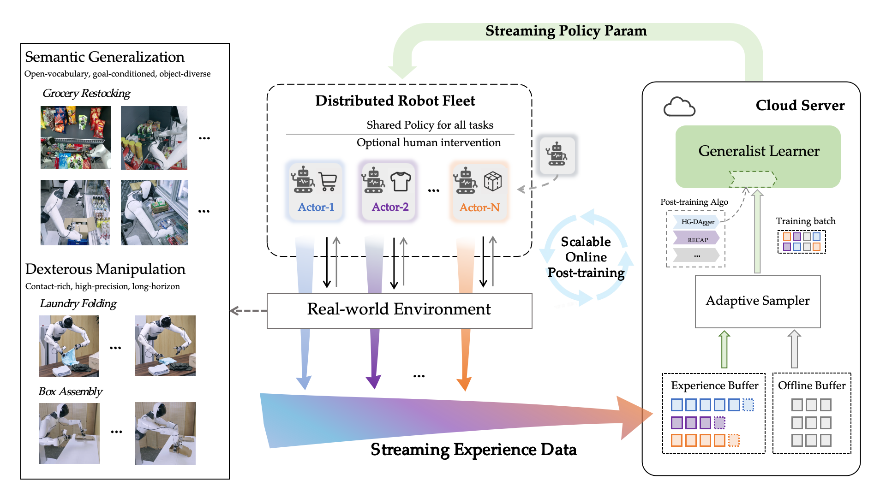
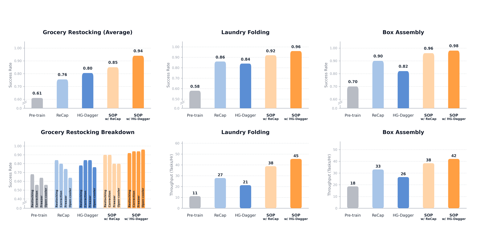
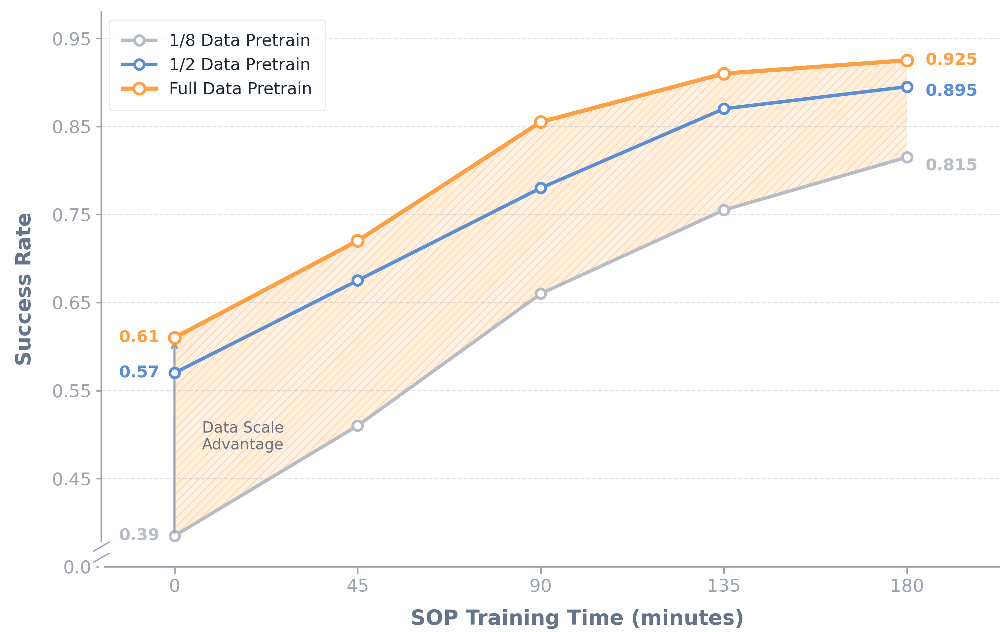

General-purpose robots are moving beyond static human demonstrations toward autonomous real-world learning. VLA models can keep improving after deployment, turning real-world experience into a scalable training resource.
General-purpose robots need more than the ability to complete a task once. They must operate reliably in changing environments, generalize across tasks, and adapt as they encounter new situations in the physical world.
We introduce SOP (Scalable Online Post-training) , a framework for updating Vision-Language-Action (VLA) models online across a robot fleet. Robots share experience through distributed online training, improving performance on complex tasks within hours.
Beyond pre-training
Over the past few years, pre-trained VLA models have provided general-purpose robots with remarkable generalization capabilities . Through pre-training on internet-scale data, VLA models have demonstrated a degree of general capability in executing different types of tasks, manipulating different objects, and adapting to different embodiments. However, pre-training alone cannot efficiently yield high performance on specific tasks. To address performance issues on specific tasks, post-training has become the primary solution. In Large Language Models (LLMs), post-training methods combined with reinforcement learning have achieved tremendous success. Recently, mainstream LLMs have reached or even exceeded human expert levels on various tasks while maintaining generalization.
However, such success has not yet emerged in VLA post-training, because post-training in the physical world faces numerous challenges. First, there is significant distribution shift between high-quality data collected by humans in advance and actual robot deployment states. Second, since real-robot post-training has not yet reached scale, the speed of robot exploration and learning remains severely limited. Additionally, single-task post-training often leads to degraded generalization. We have seen considerable progress in addressing these issues, but a post-training method that can simultaneously solve all three challenges has yet to emerge.
Continual learning across a robot fleet
To our knowledge, SOP is the first to integrate online, distributed, and multi-task learning in real-world post-training. Our key finding is that these three components are not independent but complementary: the online mechanism alleviates distribution shift, the distributed architecture enables more efficient exploration of the state space, and multi-task learning effectively preserves generalization. By combining these advantages, SOP enables robots to rapidly improve performance across multiple tasks. SOP changes more than just a specific training technique—it systematically transforms the learning paradigm for general-purpose robots. Under this paradigm, robots can go online with an initially imperfect policy. Deployment is no longer the end of development, but a new starting point for continual learning. As the distributed fleet scales up, we observe near-linear growth in performance.
In SOP, real-world experience becomes a sustainable and scalable training resource. General-purpose robots should not be static products, but systems that continuously improve during operation. After SOP training, our robots operated autonomously on target tasks for over 36 hours without requiring human intervention.
A scalable online post-training loop
SOP transforms VLA post-training from offline, single-machine, and sequential to online, fleet-based, and parallel . To put it vividly, it forms a closed loop of Multi-robot “Parallel Realities” → Centralized Cloud Learning → Instant Model Synchronization .
Multi-robot Parallel Execution. Under the multi-robot parallel execution architecture, multiple robots share a single VLA policy while simultaneously handling a wide variety of tasks and instructions. This approach significantly broadens the coverage of state-action distributions in the real world, allowing the system to encounter a wider range of scenarios and overcoming the limitations in data coverage inherent to single-machine online learning.
Centralized Cloud Online Updates. Meanwhile, through centralized cloud online updates, all execution trajectories, reward signals, and human corrections are streamed in real-time. Within cloud GPU clusters, the policy model undergoes continuous online updates, with optimized parameters synchronized back to all robots within minutes. This ensures that the learning process is always based on the latest “current policy,” thereby maintaining the stability and consistency of online training.
Preserving Generalization While Improving Performance. SOP improves performance while preserving the robot’s general capabilities. Traditional single-machine online training often causes the model to degrade into a “specialist” that only excels at a single task. However, SOP achieves parallelism in space rather than sequentiality in time, allowing multi-task learning to occur simultaneously across a broader distribution. This ensures that VLA’s generality is not compromised by targeted performance improvements.

Performance, fleet scale, and pre-training
We evaluate three questions: how SOP compares with offline post-training; how performance scales with the number of robots; and how online learning interacts with the scale of pre-training data.

We compare two representative algorithms, HG-DAgger and RECAP, both in their original settings and integrated into SOP. HG-DAgger originally used a single robot, while RECAP used offline training. Integrating either algorithm into SOP consistently improves performance across the evaluated tasks. For cloth folding and box assembly, recovery behaviors learned during online training also improve throughput.
For the second question, we compared three fleet sizes (single, dual, and quad-robot configurations) with the same total amount of data transmitted. The experimental results show that for the same total training time, more robots lead to higher performance. Under a 3-hour training limit, the final success rate for the 4-robot fleet reached 92.5%, which is 12 percentage points higher than the single-robot configuration. We believe that multi-robot data collection effectively prevents the model from overfitting to specific features of a single machine. Additionally, SOP translates hardware scaling into a significant reduction in learning time: reaching 80% performance took 174 minutes with a single robot, but only 72 minutes with four robots—a 2.4× speedup.
| Fleet Size | Success Rate (3h) | Time to 80% | Speedup |
|---|---|---|---|
| 1 Robot | 80.5% | 173.6 min | 1.0× |
| 2 Robots | 88.7% | 126.5 min | 1.4× |
| 4 Robots | 92.5% | 71.7 min | 2.4× |
Finally, we explored the relationship between SOP and pre-training data. We divided 160 hours of multi-task pre-training data into three groups: 20, 80, and 160 hours, trained separate base models, and then applied SOP to each. We found that the scale of pre-training determines both the base model’s performance and the trajectory of post-training improvements. While SOP consistently improved all models, the final performance remained correlated with pre-training scale. This suggests that online learning after deployment primarily optimizes the model’s existing knowledge rather than replacing the role of large-scale pre-training. At the same time, comparing the 80-hour and 160-hour results, we clearly noticed that in solving specific failure cases, on-policy experience yields remarkably significant marginal gains. SOP achieved approximately 30% performance improvement with just three hours of on-policy experience, while 80 hours of additional pre-training data only provided a 4% gain. This indicates that when pre-training reaches diminishing marginal returns, SOP is clearly the better solution for bridging performance gaps.

Learning in new real-world environments
We deployed the robot fleet in real-world environments unseen during pre-training. Changes in the surroundings initially reduced success rates and throughput, even on familiar tasks. After a few hours of online learning with SOP, the robots improved their performance across restocking, cloth folding, and box assembly.
Restocking in new environments
Cloth folding and box assembly
Towards large-scale real-world deployment
SOP makes deployment the starting point for continued learning. Instead of freezing a robot’s capabilities after training, experience from the fleet feeds back into a shared policy. Online updates, distributed exploration, and multi-task learning provide a path toward robots that improve as they operate in the real world.